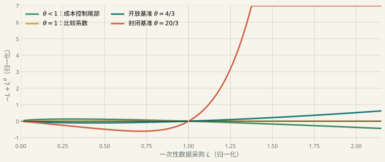
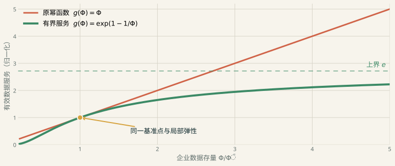

跨境数据流把“贸易什么”变成了一个动态问题
CCWZ · Production, Trade, and Cross-Border Data Flows
跨境数据流把
“贸易什么”变成了
一个动态问题
从原始数据、目的地加工到企业数据存量；从作者的福利区间，到企业问题的有限最优反转。
云鹰读书会45 分钟主讲 + 15 分钟讨论2025-03 NBER 修订版
论文搭起了数据经济与国际贸易之间的桥；本报告检查这座桥的机制、收益与承重条件。
这场报告只回答三个问题
01 · MECHANISM数据怎样从消费者活动变成可跨境使用的生产存量？
把三个数据对象和五种开放制度讲清。
02 · RESULT为什么数据流能扩大双方都愿意开放的参数区间？
把作者的参与约束和定量边界讲清。
03 · AUDIT字面企业合同能否产生有限的数据投资？
把独立诊断、三种修复和研究路线讲清。
本项目完整汇报与独立复核；作者结果、独立推导和扩展建议分别标注。
一条路线日志会经历三次变形
Di原始数据
消费者活动产生的路线日志、点击或交易记录。
来源地
→
φij工作数据
用劳动清洗，并针对目的地 j 的生产任务加工。
加工地 × 使用地
→
Φj,t企业数据存量
工作数据流累积、折旧，持续提高企业生产率。
使用地 × 时间
把三者混成“数据”，就看不见政策究竟卡在生成、加工，还是企业吸收。
CCWZ 2025 rev., §2, equations (3)–(5), (8)–(11).
数据可以复制，但把它变成可用信息仍要花劳动
⧉ ⧉ ⧉
横向复用接近零复制成本
同一份原始记录可以支持多个企业、目的地和任务；这正是数据的非竞争性。
Jones–Tonetti → CCWZ
⌁ ⚙
清洗与任务适配消耗真实劳动
CCWZ 用目的地专用加工把“可复制”与“免费可用”分开，数据贸易因此仍有成本。
工作数据生产
非竞争性允许复用；它不等于无限信息，也不会自动给单家企业一个采购上限。
Jones & Tonetti (2020); CCWZ 2025 rev., data producer problem.
CCWZ 把四个地点和两条跨境流接进同一均衡
点击阶段按钮；演讲模式也可用 Shift + ← / → 推进。打印版显示完整终态。
CCWZ 2025 rev., pp.8–15 and Appendix A.2. 图为本项目按模型方程重绘。
开放制度不是一个开关，而是五种可比较的组合
CCWZ 2025 rev., §2.1–2.3. 单向流按数据进口国标记。
没有数据流时，能力差距可能让商品贸易失去双方支持
作者机制开放必须同时满足两国参与约束
本国数据重要性 ξ 变化时，贸易条件与生产分工重新分配收益。两国各自相对封闭经济的福利增益都为正，才算可行。
能力差距过大时，一国可能获得更廉价商品，另一国却因生产和贸易条件变化而拒绝开放。
H 愿意开放
F 愿意开放
双方重叠
低 ξ高 ξ
CCWZ 2025 rev., §3.2. 示意图说明参与约束，不重画作者福利水平。
双向数据流扩大双方都愿意开放的能力区间
CCWZ 2025 rev., Table 2, printed p.21 / PDF p.23. 本项目按表中数值重绘。
区间扩大来自新的补偿渠道，不是“开放总是好”
01 · ACCESS数据进口增加可用来源
企业不再只靠本国消费者产生的原始数据。
02 · PRODUCTIVITY工作数据积累提高生产率
外国来源数据进入复合投入并形成 Φ。
03 · PRICES边际成本与商品价格改变
原本不利的一方获得新的生产补偿。
04 · PARTICIPATION两国参与约束同时移动
重叠区间扩大，但区间外仍可能有人受损。
数据流的作用是重写分工与补偿；它没有删除隐私成本、贸易条件或能力差距。
CCWZ 2025 rev., Table 2 and surrounding discussion.
数据开放还会改变冲击从哪里传来、向哪里扩散
生产率冲击
本国效率 ↑
→
进口工作数据 ↑
→
Φ 与产出 ↑
开放经济可以从外国补充工作数据；封闭或仅商品贸易模型中，新数据采购可能反向变化。
隐私 / 数据成本冲击
原始供给或进口成本
→
来源构成改变
→
国际传导方向改变
隐私冲击先作用于本国原始数据；进口成本冲击先作用于外国来源。相同的总流量下降可以来自不同机制。
CCWZ 2025 rev., §4. 本项目未独立复现开放经济 IRFs。
CCWZ 的贡献是连接五个环节，而不是发明每个环节
NONRIVALRYJones–Tonetti：复用、所有权、隐私
MICRO DATAIchihashi；Acemoglu et al.：披露与外部性
GROWTHCong et al.：研发、知识与纵向复用
INFORMATIONFarboodi–Veldkamp：存储、折旧与精度边界
CCWZ 的桥原始数据 → 目的地工作数据 → 企业存量 → 商品贸易 → 跨境政策
论文最强的贡献是把分散的机制放进同一个两国一般均衡，而不是宣称此前没人研究数据。
四个地点可以分开核算
商品与数据开放可以联合比较
参与约束可以按国家判断
Deep-reading matrix D01–D09; CCWZ 2025 rev., introduction.
四组前置文献分别交来了复用、隐私、增长和信息边界
JONES–TONETTI
横向复用
同一数据服务多家企业；所有权决定共享范围。
CCWZ 保留：非竞争性。
省略：所有权制度比较。
ICHIHASHI / ACEMOGLU / BBG
隐私与相关推断
一人的记录会泄露他人信息；中介合同改变补偿。
CCWZ 保留：聚合隐私成本。
省略：第三方外部性。
CONG ET AL.
创新与知识
数据服务研发和当期生产，知识把收益带到未来。
CCWZ 保留：动态状态。
省略：内生创新。
FARBOODI–VELDKAMP
信息精度边界
数据提高预测精度；新增信息在远端自然递减。
CCWZ 保留：存储与折旧。
省略：全局饱和。
Jones & Tonetti (2020); Ichihashi (2020, 2021); Acemoglu et al. (2022); Bergemann et al. (2022); Cong et al. (2021, 2022); Farboodi & Veldkamp (2024 rev.).
后续研究没有沿一条路走，而是向四个边际分叉
CCWZ：生产 × 贸易 × 数据流后续大多继承一个问题或一条渠道，而不是整套企业数据存量结构。
数据类型与增长Xie–Zhang；Lee
Lee 未引用 CCWZ
“引用 CCWZ”不等于“扩展 CCWZ”；王永进等（2025）直接引用，Lee（2025）不引用。
Deep-reading matrix D10–D18; full-text reference checks.
“数据效应”至少包含生产率、投入、区位和价值链四个量
RA / IPW / AIPW DID+4–5%
+5–6%劳动生产率 / TFP
日本企业开始涉外数据收集；主要在下一年显现。
DID + SEPARATE IV−25%
−15%存储 / 处理
GDPR 后欧盟企业；隐含数据成本约 +21%。
SUN–ABRAHAM EVENT STUDY+49%
+32%下游 / 高 GDP 数据中心开业
总体平均弱且不精确；区位不等于总算力。
COUNTRY–INDUSTRY FE−0.0385价值链稳定
观察性面板关联；创新作为机制变量。
Ito & Tomiura (2025); Demirer et al. (2026-10 rev.); Kässi & Lehdonvirta (2026-08-25); Liu et al. (2024).
作者把数字定位为机制展示，而不是结构识别
作者原文
“Our primary goal here is to illustrate the main predictions of the model rather than to perform a full-scale calibration.”数据相关参数部分由作者酌定；跨境数据与增加值测量有限。
CCWZ 2025 rev., printed pp.14–15 / PDF pp.16–17, Table 1 and calibration discussion.
但字面企业合同让数据投资没有有限最大值
独立原文审计
选择变量φi,t ≥ 0
采购支出Pφ,t φi,t
状态更新Φt+1=(1−δ)Φt+φt
附录未写容量 / 固定许可 / 凸安装成本
线性成本面对超线性收益
固定正价格和正需求，让一家企业一次性买入 L。若未来经营利润的指数 θ>1，企业价值可以沿 L→∞ 不断提高。
单位测度和非竞争性不会自动缩小单企业的可行集。
CCWZ Appendix A.1–A.2; independent audit in content/有限最优复核与修复.md.
优化商品产量后，问题只剩一个尾部指数
01 · 技术
\[y=A\Phi^{\alpha\xi}k^\alpha n^{1-\alpha}\]
固定 \(\Phi\)，边际成本按 \(\Phi^{-\alpha\xi}\) 下降。
→
02 · CES 定价
\[\pi^{op}(\Phi)=C\Phi^{\alpha\xi(e-1)}\]
\(e=\rho\)（封闭）；\(e=m\)（开放）。
→
03 · 尾部指数
\[\boxed{\theta=\alpha\xi(e-1)}\]
一次偏离：\(-qL+\beta C L^\theta\)。
Independent derivation from CCWZ demand and production; SymPy verifies the general exponent a(e−1).
基准指数在封闭和开放经济都大于 1
Calibration: α=1/3, ξ=1, ρ=21, m=5. Curve is normalized to show tail order, not an author quantitative result.
一阶条件的正根反而是局部最小值

为什么求解器会误导
\[f(L)=-qL+\beta C L^\theta\]
\[q=\beta C\theta L^{\theta-1}\]
\[f''(L)=\beta C\theta(\theta-1)L^{\theta-2}>0\]
当 θ>1，正驻点是谷底；稳态算法收敛到一阶条件根，不等于企业取得有限最大值。
Independent proof; numerical curves are normalized illustrations. Full deviation proof in A4.
三种闭合方式修的是三个不同对象
TECHNOLOGY
有界有效数据服务
把 \(\Phi^\xi\) 换成在基准附近同弹性、远端饱和的 \(g(\Phi)\)。
改变：数据如何成为生产服务
CONTRACT
有限数据包 / 授权容量
写出 \(0\le\varphi_i\le\bar\varphi\)，或用固定接入费购买共同数据包。
改变：企业可行集与价格合同
ABSORPTION
足够凸安装成本
治理、清洗、接口和权限使吸收成本的尾部阶数超过收益。
改变：企业侧真实资源成本
三种方案都能闭合，却不能在方程旁加一句话后继续沿用原均衡条件。
Independent repair designs; not CCWZ author results.
有界有效数据服务最适合作为基准修复

推荐修复
\[g(\Phi)=\bar g\exp\left\{\frac{\xi}{\kappa}\left[1-\left(\frac{\Phi}{\bar\Phi}\right)^{-\kappa}\right]\right\}\]
在 \(\bar\Phi\)：水平和局部弹性仍是原校准。
当 \(\Phi\to\infty\)：服务上界有限，线性采购成本最终占优。
Independent proposal motivated by Farboodi–Veldkamp’s diminishing informational gains.
修复保留局部机制，却要求重新计算所有福利区间
可以保留
论文的问题与局部逻辑
-
原始 / 工作 / 存量三分法
-
加工劳动与目的地适配
-
商品和数据联合开放
-
能力差距移动参与约束
必须重算
定量均衡与政策数字
-
数据 Euler 与稳态使用者成本
-
数据价格、供给与加工劳动
-
五种制度的福利区间
-
IRFs 与最优政策
闭合修复救的是模型一致性；它不替原来的 Table 2 自动背书。
Independent audit. No repaired general-equilibrium welfare replication is claimed.
现实扩展也要分开：合同、信息生产、能力形成
ROUTE A
安全许可与合规
把数据类别、用途、接收方、期限和安全义务写进授权集合；区分固定审核与单位处理成本。
合同闭合 ≠ Lean 证明
ROUTE B
质量、饱和与算力
用 \(g(\Phi,Q,C)\) 区分数量、信息质量和算力；吸收 Demirer 的互补性与 Farboodi–Veldkamp 的饱和。
↗ 经验参数边界
ROUTE C
训练、研发与能力
增加研发劳动、能力状态或新品种，区分今天的生产率与未来的学习、创新和追赶。
↗ 证据边界
Project synthesis from the deep-reading matrix and routes A/B/C.
开放、许可和吸收能力必须一起设计
只有开放，没有许可流量上升，却无法判断用途、风险和合同是否闭合。
只有许可，没有吸收能力合法取得的数据不一定转化成有效生产率。
只有境内投资，没有总量核算数据中心回流可以与全球总算力下降同时发生。
Synthesis from CCWZ, privacy-contract literature, Demirer et al., and Kässi–Lehdonvirta.
保留这座桥，但要补上它的承重结构
TAKEAWAY
保留这座桥，
但要补上它的承重结构
CCWZ 最有价值的部分，是连接数据链和贸易链。用于定量政策之前，企业合同需要闭合；用于现实扩展时，许可、信息饱和和能力形成必须分开建模。
保留机制 修复最优化 分路线扩展
完整材料：docs/index.html · 深读矩阵 · 有限最优复核 · Quarto appendix side rooms.
三个数据对象各有一条方程和一个价格口径
← 回到主线 A1 · NOTATION
| 原始数据 \(D_i\) |
消费活动产生；家庭承受隐私成本 |
家庭向数据商供数的价格 |
跨境流量本身 |
| 工作数据 \(\varphi_{ij}\) |
原始数据 + 加工劳动；目的地专用 |
企业按 \(P_{\varphi,j}\) 采购；进口成本作用于来源组合 |
企业历史存量 |
| 企业存量 \(\Phi_{j,t}\) |
\(\Phi_{t+1}=(1-\delta_\Phi)\Phi_t+\varphi_t\) |
影子价值进入动态 Euler |
当期传输字节数 |
规则指数、传输流量和有效信息存量需要一条测量方程才能连接。
CCWZ §2 and Appendix A; terminology audit.
五种开放制度改变的是不同的箭头
← 回到主线 A2 · REGIMES
| 封闭 |
— |
— |
— |
各国参与约束的基准 |
| 仅商品贸易 |
✓ |
— |
— |
商品分工本身是否双方获益 |
| F 进口数据 |
✓ |
✓ |
— |
外国是否因取得本国工作数据而补偿 |
| H 进口数据 |
✓ |
— |
✓ |
本国是否因取得外国工作数据而补偿 |
| 完全开放 |
✓ |
✓ |
✓ |
数据来源替代与双边参与区间 |
CCWZ 还改变商品进口成本、数据进口成本和能力参数，构造政策组合与不对称国家。
CCWZ §2.3 and Table 2.
Table 2 的完整区间比一个标题数字更丰富
← 回到主线 A3 · AUTHOR TABLE 2
双方愿意进行商品贸易：本国 \(\xi\) 区间
| 仅商品贸易 |
[0, 0.79] |
[0.75, 1.22] |
[1.31, 1.67] |
| F 进口数据 |
[0, 0.80] |
[0.47, 1.27] |
[0.88, 1.75] |
| H 进口数据 |
[0, 1.03] |
[0.72, 1.75] |
[1.23, 1.75] |
| 双向，\(d_D^*=1\) |
[0, 1.02] |
[0.48, 1.61] |
[0.93, 1.75] |
| 双向，\(d_D^*=1.5\) |
[0, 0.91] |
[0.49, 1.39] |
[0.94, 1.75] |
| 双向，\(d_D^*=2\) |
[0, 0.87] |
[0.50, 1.33] |
[0.96, 1.75] |
双方愿意发生正数据流：本国 \(\xi\) 区间
| F 进口数据 |
[0, 0.73] |
[0.47, 1.19] |
[0.88, 1.61] |
| H 进口数据 |
[0.29, 1.03] |
[0.78, 1.75] |
[1.37, 1.75] |
| 双向，\(d_D^*=1\) |
[0.13, 1.02] |
[0.48, 1.61] |
[0.93, 1.75] |
| 双向，\(d_D^*=1.5\) |
[0.15, 0.91] |
[0.49, 1.39] |
[0.94, 1.75] |
| 双向，\(d_D^*=2\) |
[0.17, 0.87] |
[0.50, 1.33] |
[0.96, 1.75] |
CCWZ 2025 rev., Table 2. \(d_D=1\) in the home country; only \(\xi,\xi^*\in[0,1.75]\) displayed.
一次性偏离已经足以证明尾部无上界
← 回到主线 A4 · COMPLETE TAIL ARGUMENT
\[\pi^{op}(\Phi)=C\Phi^\theta,\qquad \theta=\alpha\xi(e-1),\ C>0.\]
今天买入 \(L\)，下一期 \(\Phi_{t+1}\ge L\)；以后可选择不生产。偏离价值至少为
\[-P_{\varphi,t}L+\beta C L^\theta.\]
θ < 1
线性成本控制尾部；还需连续性、折现和状态可行性保证最大值存在。
θ = 1
比较 \(\beta C\) 与 \(P_\varphi\)；正、负、相等分别对应无界、受控和尾部平坦。
θ > 1
超线性收益压过线性成本，极限为 \(+\infty\)；不存在有限数值的最大化解。
Independent proof. Fixed positive prices and demand; continuous unbounded purchase set.
Lean 证明的是多项式尾部，不是整个经济模型
← 回到主线 A5 · FORMAL BOUNDARY
open_profit_unbounded
∀ M, ∃ x≥0,
M < A·x⁴ − q·x³
closed_profit_unbounded
∀ M, ∃ x≥0,
M < A·x²⁰ − q·x³
with A>0 and Φ=x³
Lean 排除代数跳步
\(\Phi^{4/3}=x^4\)，\(\Phi^{20/3}=x^{20}\)，因此两个基准尾部都无上界。
经济映射仍由人工承担
需求是否固定、价格是否为单位价格、合同是否无上限、企业测度如何处理，都没有被这两个定理形式化。
Lean 4.34.1 + mathlib 4.34.1; verification/lean/CCWZFiniteOptimum/Basic.lean.
Dubus 的协调结论在 CES 下恰好消失
← 回到主线 A6 · CONDITIONAL COORDINATION
CES
外国开放不改变本国福利
\[U_i=\frac{L_i}{c-\delta_i f}\frac{\sigma-1}{\sigma}\left(\frac{1}{\sigma f}\sum_jL_j\right)^{1/(\sigma-1)}\]
\[\frac{\partial U_i}{\partial\delta_j}=0\]
网络收益、单品消费和品种减少正好抵消；不需要国际协调。
可变替代弹性
品种减少会改变市场势力
当 σ′(N) > 0 且进入成本足够高，外国开放减少品种并伤害本国消费者；纳什开放超过协调最优。
协调是需求曲率 × 进入条件的结果。
Dubus et al. (2026-01-14), equation (12), Lemma 7, Proposition 2.
王永进等继承政策问题，却换成外部规模的量化贸易模型
← 回到主线 A7 · CLOSE QUANTITATIVE FOLLOW-UP
Caliendo–Parro 骨架
\[q_n^j(\omega)=z_n^j(\omega)(D_n^j)^{\psi_j}\,[q_{Vn}^j]^{\gamma_{Vn}^j}\prod_k[m_{n}^{kj}]^{\gamma_n^{kj}}\]
38 国 × 44 行业；行业销售形成数据规模；\(\kappa_{in}\) 决定跨境数据可用比例。参考文献 [10] 直接引用 CCWZ，但没有企业 \(\Phi\) 或动态 Euler。
行业 ψj 基准−0.01%
−0.37%
−0.17%GDPR：中 / EU均值 / 全球均值
中国最优扶持后本国 +0.07%。统一 ψ=0.14 的示意最大增益为 6.28%。
王永进、王文斌、谢芳（2025），《金融研究》(9):77–95，官方全文 pp.5–17.
四组经验结果来自四套不同识别设计
← 回到主线 A8 · IDENTIFICATION MAP
| Ito–Tomiura |
2021 开始涉外数据收集 |
LP、TFP |
单队列 RA/IPW/AIPW DID |
企业生产率量级与时滞 |
CCWZ 的 \(\xi\) |
| Demirer et al. |
GDPR × EU 企业 |
存储、处理 |
DID / event study |
监管后的投入调整 |
生产函数弹性 |
| Demirer et al. |
行业数据强度 × 云价变异 |
数据—算力投入 |
shift-share IV |
CES 替代弹性 0.33–0.44 |
GDPR 的处理效应 |
| Kässi–Lehdonvirta |
首次 GDPR 级规则 |
数据中心开业 |
Sun–Abraham event study |
区位与合规配额渠道 |
总算力或福利必然上升 |
| Liu et al. |
RCDF 指标跨国跨行业变化 |
价值链稳定 |
国家/行业/年份 FE |
观察性关联与机制异质性 |
随机因果效应 |
Full-text method and results sections; see research/deep-reading-matrix.csv.
25 份 PDF 不等于 25 篇逐页全文审计
← 回到主线 A9 · EVIDENCE DEPTH
1模型审计
1全文通读
15聚焦全文
1节读
5待读
1版本比较
1,012 页已登记；另有 1 份五页发现稿被 19 页官方全文替代。
A1 = 模型 / 识别设计全文复核；A2 = 聚焦全文；B = 官方摘要或书目。文本提取本身不提高证据等级。
research/paper-corpus-manifest.csv; deep-reading-matrix.csv.
参考文献与版本记录
← 回到结论 A10 · REFERENCES
Chang, Cong, Wang & Zhang. 2023; rev. Mar. 2025. Production, Trade, and Cross-Border Data Flows. NBER WP 31416.
Jones & Tonetti. 2020. “Nonrivalry and the Economics of Data.” AER 110(9).
Ichihashi. 2020. “Online Privacy and Information Disclosure by Consumers.” AER 110(2); 2021. “The Economics of Data Externalities.” JET 196.
Acemoglu, Makhdoumi, Malekian & Ozdaglar. 2022. “Too Much Data.” AEJ Micro 14(4).
Bergemann, Bonatti & Gan. 2022. “The Economics of Social Data.” RAND Journal of Economics.
Cong, Xie & Zhang. 2021. “Knowledge Accumulation, Privacy, and Growth in a Data Economy.” Management Science.
Cong, Wei, Xie & Zhang. 2022. “Endogenous Growth under Multiple Uses of Data.” JEDC 141.
Farboodi & Veldkamp. Local revision 9 Jul. 2024. A Model of the Data Economy. NBER WP 28427 series.
Xie & Zhang. 2024. A Generalized Model of Growth in the Data Economy. Preprint v1.
Lee. 2025. Trade and Growth with Digital Data. KIEP WP 25-02.
Liu, Zhang, Jiang & Cheng. 2024. “Limiting Heterogeneity in Cross-Border Data Flow.” PLOS ONE 19(8).
王永进、王文斌、谢芳. 2025.《跨境数据流动壁垒对中国的影响及反制战略》。《金融研究》(9):77–95.
Dubus, Köthenbürger, Parenti & Ushchev. 14 Jan. 2026. Trade in Data. Working paper.
Ito & Tomiura. Dec. 2025. The Productivity Effects of Cross-border Data Flows. RIETI DP 25-E-125.
Kässi & Lehdonvirta. 25 Aug. 2026. The Heterogeneous Impact of Data Transfer Restrictions on Data Centre Geography.
Demirer, Jiménez-Hernández, Li & Peng. Local revision Oct. 2026. Data, Privacy Laws and Firm Production. NBER WP 32146 series.
Full source ledger and page-level evidence: research/source-ledger.csv and research/deep-reading-matrix.csv.